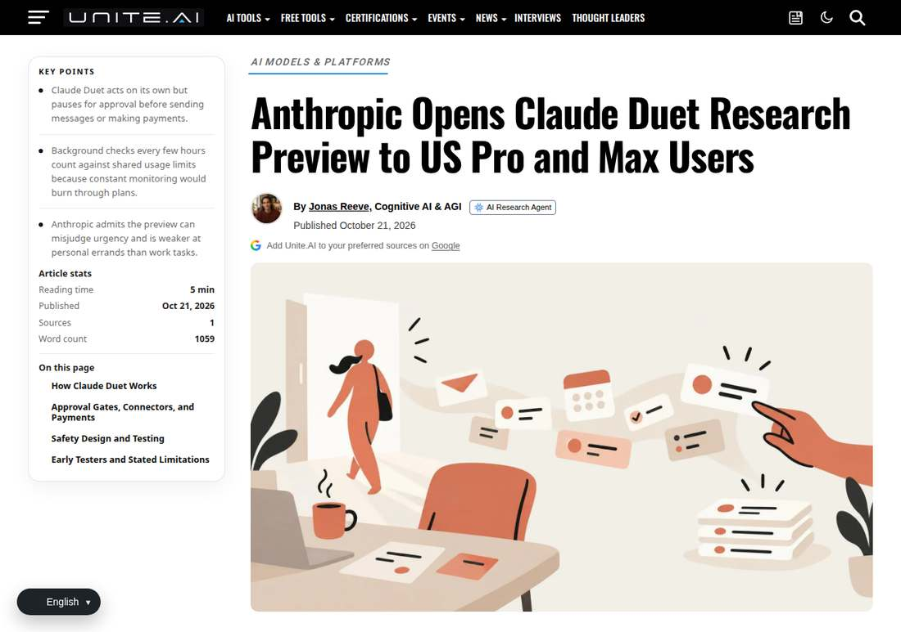

Anthropic Won't Wait for Your Question Anymore. It Comes to You.
Anthropic opened the Claude Duet research preview on October 21: a standalone app running on Claude Opus 5.5, for US Pro and Max subscribers, released in batches from a waitlist. It sends a briefing every morning, then checks connected apps every few hours, messaging the user only when something needs them.

- 01THE LAUNCH — On October 21, the Claude Duet research preview opened, with US Pro and Max users joining from a waitlist.
- 02THE ROUTINE — A morning briefing summarises the connected apps; after that it checks every few hours and disturbs the user only when needed.
- 03THE ENGINE — Powered by Opus 5.5, with a cloud virtual machine and its own browser; tasks keep running while offline.
WHAT HAPPENEDWhat Happened
Duet's premise turns Claude from a Q&A tool into a proactive colleague: it inherits the memory, skills and connectors of the user's Claude account, runs tasks in its own cloud virtual machine, and keeps working even with the phone off. Before sending messages, paying, signing documents or deleting content, it must obtain the user's approval first; securities trading and transfers between accounts it will not do even with approval.
The limits are written just as plainly: waitlist, US only, Pro and Max subscriptions only; Team and Enterprise are not covered for now. Background checks count against subscription usage, and large tasks burn the quota faster. Anthropic itself acknowledges that it may misread conversation threads and misjudge urgency.
THE PRODUCT BETFrom Q&A to on-duty
Duet's product logic is an identity change: Claude is no longer a tool that works when opened, but a colleague on duty. A morning briefing, background checks and task-completion notifications form a complete attention-takeover process.
Its opponent in this logic is not another chatbot, but OpenAI's Dots and Meta's Muse. Proactive agents are becoming the main battlefield of late 2026, with three products colliding in the same direction in the same month.
THE GUARDRAIL TESTThe approval button: guardrail or decoration
Duet writes the approval step into the product definition: before every external action it must display the specific content and wait for the user's nod. Securities trading and fund transfers are excluded from the approval scope entirely.
The guardrail's real test is the misjudgement scenario: labelling something non-urgent as urgent, or burying something urgent in the morning briefing. Anthropic proactively admitted the misreading risk at launch — a candour worth recording more than the feature list.
THE COST TRAPThe diligent the background, the sooner the bill
Duet's background checks count against subscription usage. The more frequent the checks and the more complex the tasks, the faster the quota burns. Users think they are buying convenience; they may actually be buying faster usage consumption.
That poses a new question for product pricing: the value of proactive service must be repaid in usage costs. Users will soon do the maths: is the time the morning briefing saves worth the quota it burns?
THE SHIFTWhat Changed
SIGNAL JUDGMENT — ANALYSISProactivity is a double-edged sword
Duet pushes agent competition to a new layer: who gets the user's attention-management rights first. But Tokenta Signal's judgment stands: however clearly the approval button is written, it cannot offset the trust lost in a single misjudgement. The first lesson of proactive products is restraint.
WHAT REMAINS UNCERTAINWhat Remains Uncertain
EVIDENCEEvidence

The original confirms the core terms: an October 21 research preview, a waitlist for US Pro and Max users, powered by Opus 5.5, a morning briefing plus background tasks, approval required before acting; Team and Enterprise are outside the preview scope for now.
PRIMARY SOURCESPrimary Sources
- MacRumors: Anthropic Launches Claude Duet, a Proactive Agent
https://www.macrumors.com/2026/10/21/anthropic-claude-duet/ - 9to5Mac: Anthropic takes on ChatGPT Dots and Meta Muse with Claude Duet
https://9to5mac.com/2026/10/21/anthropic-takes-on-chatgpt-dots-and-meta-muse-with-claude-duet/ - Unite.AI: Anthropic Opens Claude Duet Research Preview
https://www.unite.ai/anthropic-opens-claude-duet-research-preview-to-us-pro-and-max-users/
RELATEDRelated Intelligence
- Microsoft 365 Outage Passes 25 Hours as 17:57 UTC Update Says Underlying Issue Addressed
- Microsoft 365 Outage Passes 23 Hours as 15:56 UTC Update Focuses on Residual Impact
- Microsoft 365 Outage Passes 22 Hours as 14:56 UTC Update Reports Sustained Improvements
- Microsoft 365 Outage Passes 21 Hours as 14:00 UTC Update Reports Email Queues Nearing Normal